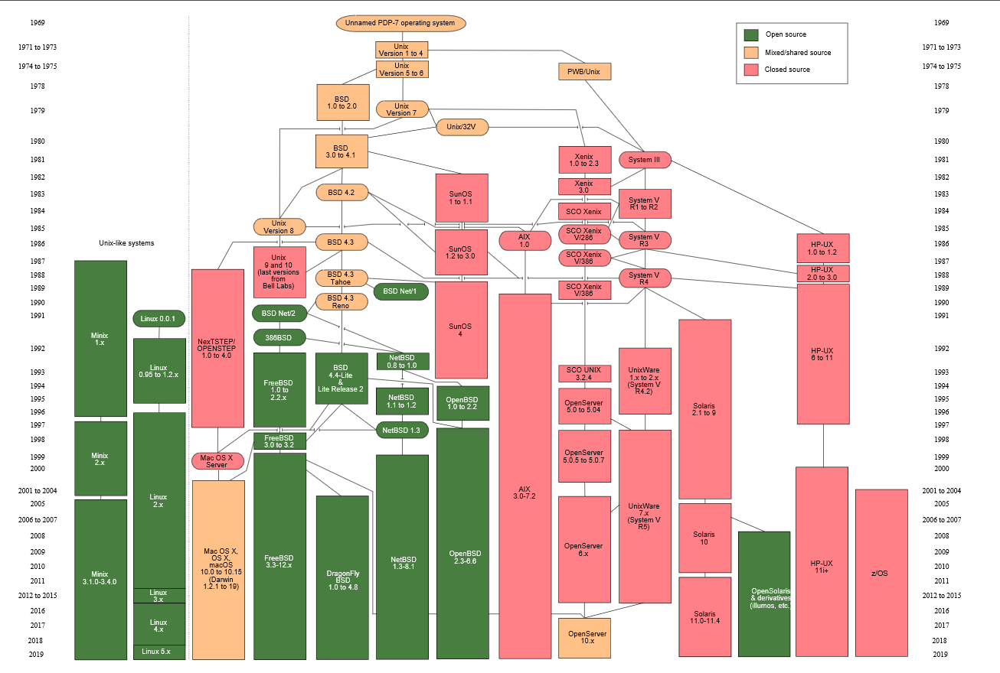

week1-5 <<
Previous Next >> notes
week6-10
week6
抽查影片
week7工作分配討論
協同產品設計實習 Assignment 2 工作分配與問題討論
Topic 1:
40623115
40623251
40723204
42723210
40723212
40723225 |
Topic 0:
40723232
40723234
40723238
40723245
40723250
|
課堂抽查直播影片
week 8 更新 v-rep
1.進入CoppliaSim 官方網站:https://www.coppeliarobotics.com/
2.進入download 中下載教育版
3.下載CoppeliaSim Edu Binaries可攜版本
4.完成上述步驟即可刪除原本的V rep
python remote api 環境參數設置
在Y槽中輸入pip install python imutils opencv-python 即可設置完成
week9

由於Linux是Unix底下的其中一個分支，所以兩者指令極其相似
以下為Unix 與 MS-DOS指令對照表
參考資料:https://zh.wikipedia.org/wiki/UNIX
https://ithelp.ithome.com.tw/articles/10210448
https://github.com/shyangs/blog/issues/8
week1-5 <<
Previous Next >> notes